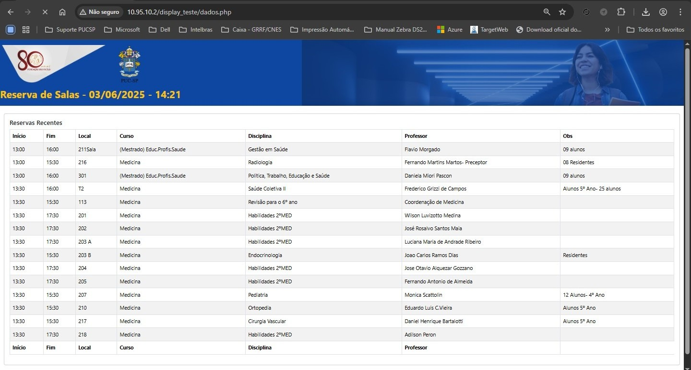

Portfólio
Projeto | Rollout: Sistema criado para gerar formulários
O projeto Rollout foi desenvolvido quando eu trabalhei na empresa Algar Tech. Esse sistema
foi criado para automatizar a criação de formulários que antes eram criados por planilhas.
Com esse sistema foi possível a criação da documentação de retirada de computadores, checklist
de softwares e demais documentações pertinentes para o rollout dos computadores e softwares.
O sistema de criação de formulários foi desenvolvido utilizando as seguintes tecnologias:
PHP, BootStrap, JavaScript e Mysql.
Esse é o menu principal do sistema, onde é possível acessar as documentações. E as fases
do projeto do rollout.
Essa é a tela principal do sistema, onde é exibido o nome do projeto e o período que está sendo
realizado o projeto, que no caso foi entre os anos de 2019 e 2020.
Agenda | Atualização de layout

Recentemente atualizei a parte visual da lista de um sistema de agendamentos, da faculdade
onde trabalho atualmente. Para atualizar a página utilizei a linguagem PHP, linguagem essa
que o sisstema foi desenvolvido, JavaScript, HTML5 e CSS.